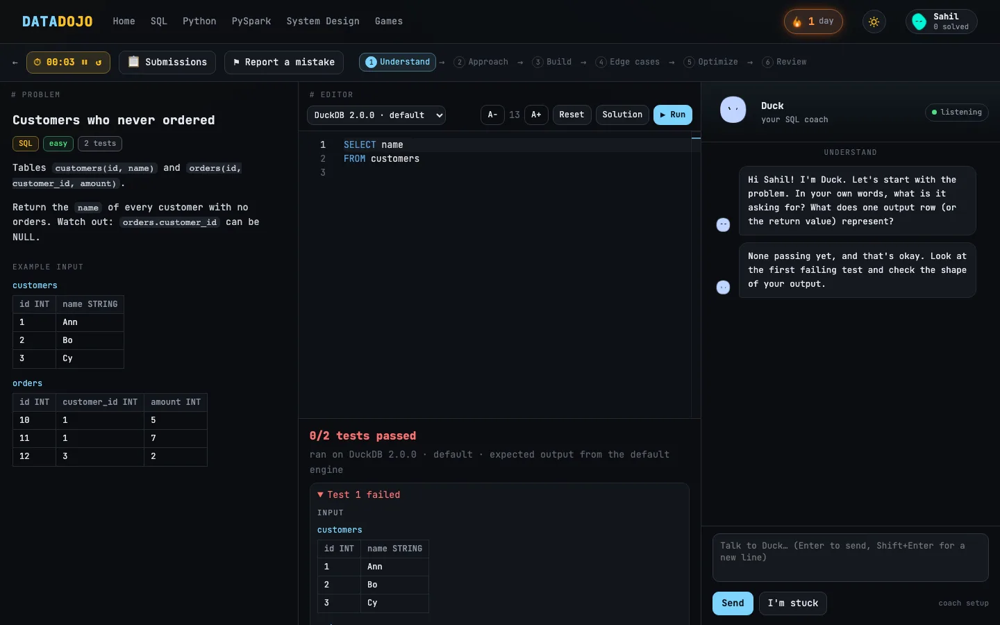

Practice SQL, Python and PySpark like it's the real interview. 234 problems graded by real engines, a data system design course, brain games, and friendly AI coaches that give hints, not answers. Everything runs on your own computer.

Problems are graded by actually running your code, the same way an interviewer would check it.
SQL, Python and PySpark by pattern: windows, gaps & islands, CDC, SCD2, joins, parsing and more, plus curated lists.
DuckDB, SQLite, PostgreSQL, Spark SQL, plus MySQL, Snowflake, BigQuery and SQL Server syntax. Python 3.10 to 3.15, PySpark 3.4 to 4.x.
A six-stage coaching chat (understand → approach → build → edge cases → optimize → review) that reacts to your test runs.
20 lessons and 12 full case studies (clickstream, CDC to lakehouse, fraud, feature store) with diagrams and quizzes.
60-second sprints: Guess the Output, Join Size, Spot the Bug and Big-O. Scores and streaks tracked.
Runs locally. Bring your own Claude, OpenAI or Gemini key, or run Gemma for free with Ollama, and nothing leaves your laptop.
Grab the installer for your computer above. On Mac, drag DataDojo into Applications.
Paste an API key, or pick a local Gemma model and DataDojo walks you through Ollama.
Pick a pattern, start a session, keep the streak. PySpark downloads itself the first time you need it.
DataDojo isn't signed by Apple yet, so macOS asks once:
Windows SmartScreen may warn about an unrecognized app:
PySpark problems need Java 17 (free from adoptium.net). Everything else works out of the box.
Linux: extract the download and run DataDojo/DataDojo; it opens in your browser.
It runs real SQL, Python and Spark engines on your machine, so phones and tablets can't install it. Send yourself the link and grab it on a Mac, Windows or Linux computer.